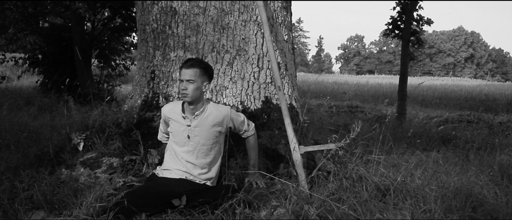
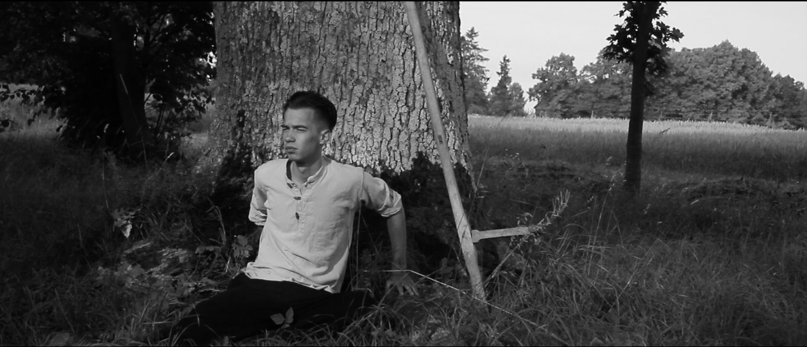

Director: Rudolfs Anze
Writer: Rudolfs Anze
Producers: Matiss Kaza, Kristine Anze
Cinematographer: Matiss Kaza
Music: Harrison Shimazu
Editor: Matiss Kaza
Sound: Roman Fusco
Flames on the Soil (2016)
drama, Latvia, 13'
A young Latvian farmer’s life changes as he is caught up in the turmoils of World War II.
Festivals: Best Debut (Nomination) – Latvian National Film Award 2016


scroll for more >